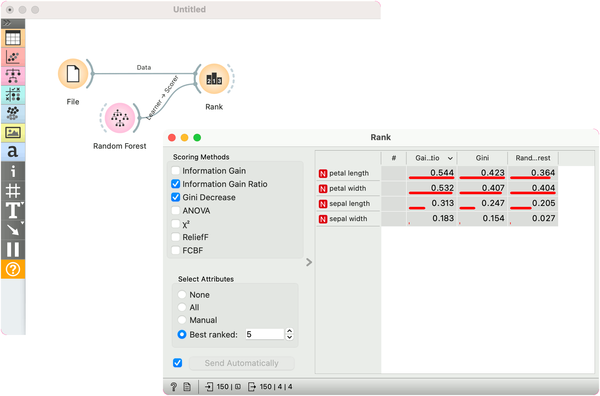

Learners as Scorers
Certain learners can be used as feature scorers in Orange. Here’s a quick example with Random Forest.
We are using the iris data for the example. Connect File with Rank. Then connect Random Forest to Rank. Random Forest will be used as a Scorer in this case. Rank will use Random Forest’s feature importance to rank the attributes.

Passing additional scorers works for both, classification and regression:
- Logistic Regression (classification) / Linear Regression (regression)
- Stochastic Gradient Descent
- Gradient Boosting
- Random Forest